You can compare your model with database, script, or another local model to check for differences using the Complete Compare wizard. Based on the results, you can then resolve or merge differences. Thus, maintaining a consistent model and database.
This topic walks you through the steps to compare a Databricks model with database.
To compare models with database:
Open your Databricks model.
Ensure that you are in the Physical mode.
For example, the following image uses a Databricks model with eight tables, 61 columns, and seven relationships.
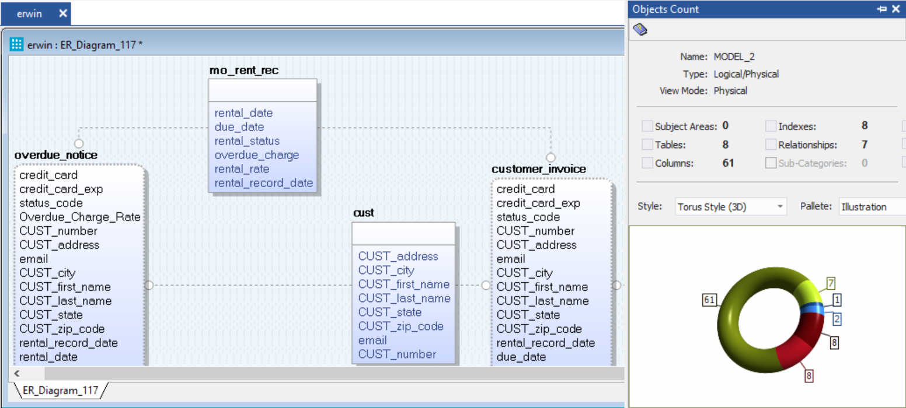
Click Actions > Complete Compare.
By default, the Complete Compare wizard assigns the open model as the Left Model. Hence, the Right Model tab appears.
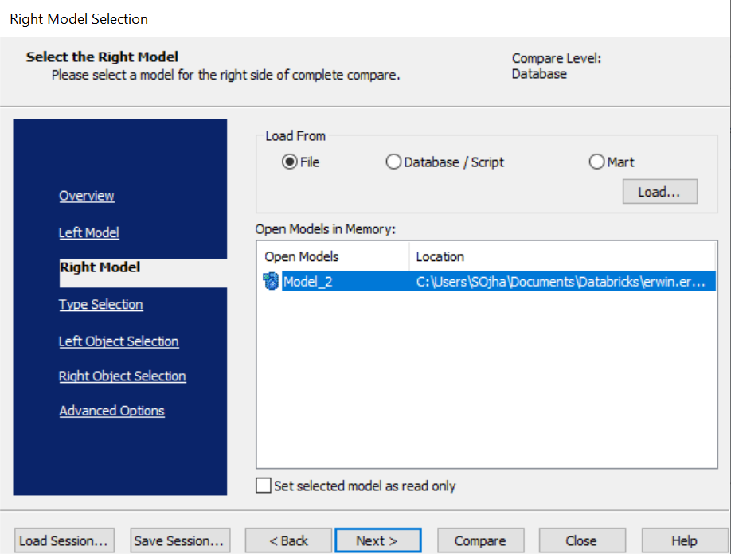
Click Database/Script.
By default, the Allow Demand Loading option is selected.
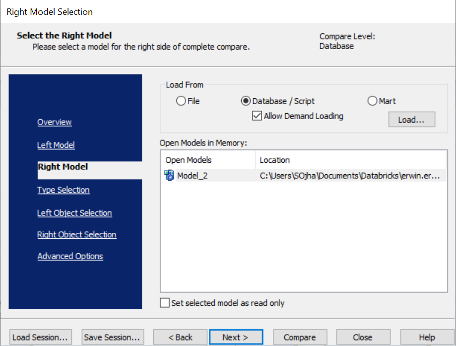
Click Load.
The New Model dialog box appears. This starts the reverse engineering process to pull a model from the database to compare.
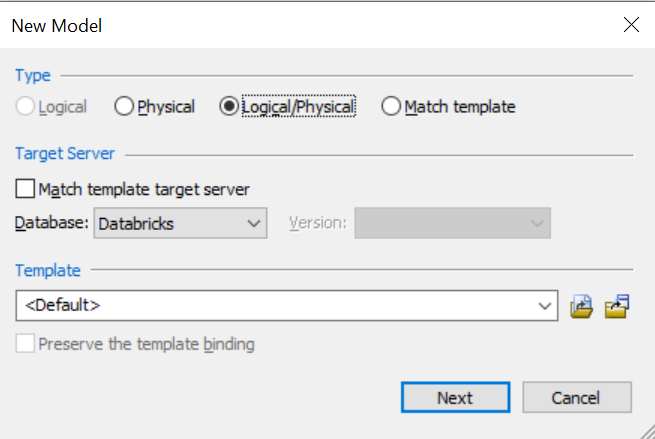
Ensure that the Database is set to Databricks. Then, click Next.
The Reverse Engineer Wizard appears.
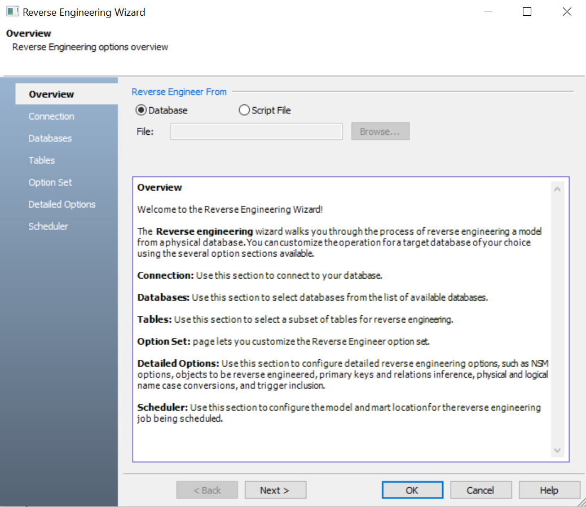
Click Database. Then, click Next.
The Connection tab appears. Use this tab to connect to the database from which you want to reverse engineer the model.
After connection is established, click Next.
The Databases tab appears. It displays a list of available databases.
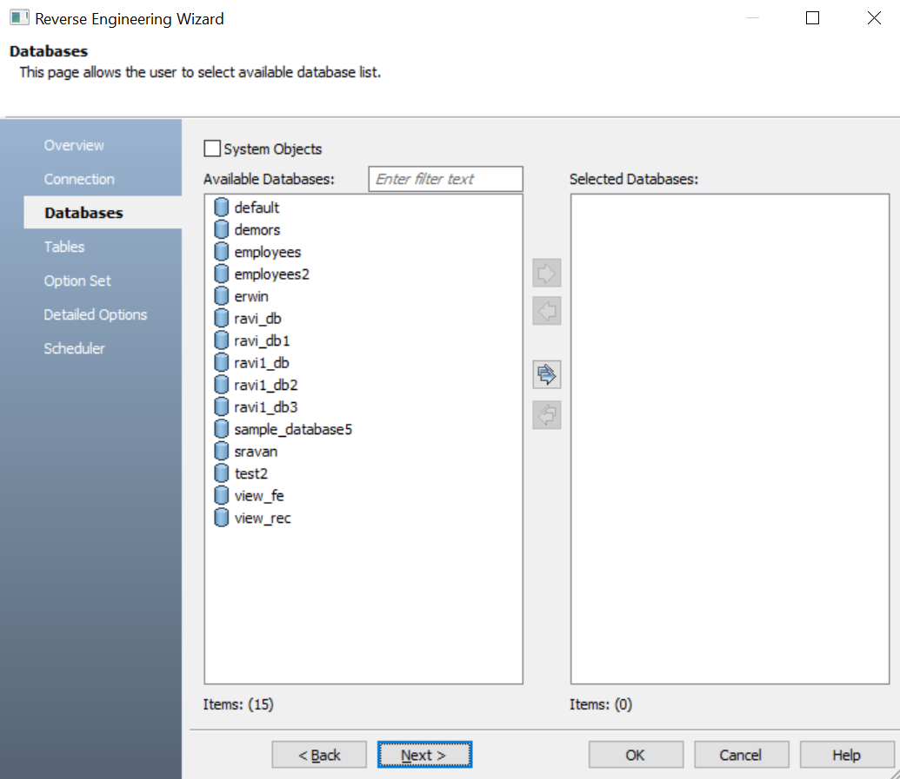
Under Available Databases, select the databases that you want to reverse engineer. Then, click .
This moves the selected databases under Selected Databases.
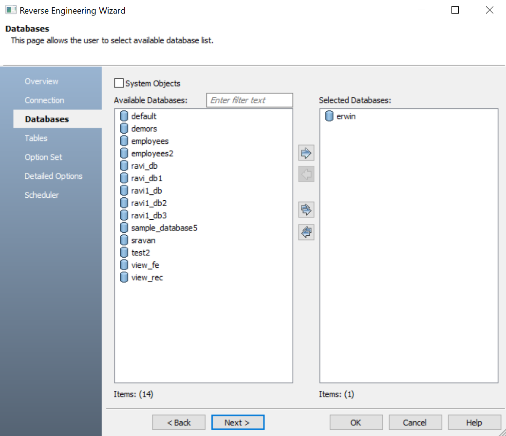
Click Next and on the Tables tab, click .
This selects all the available tables.
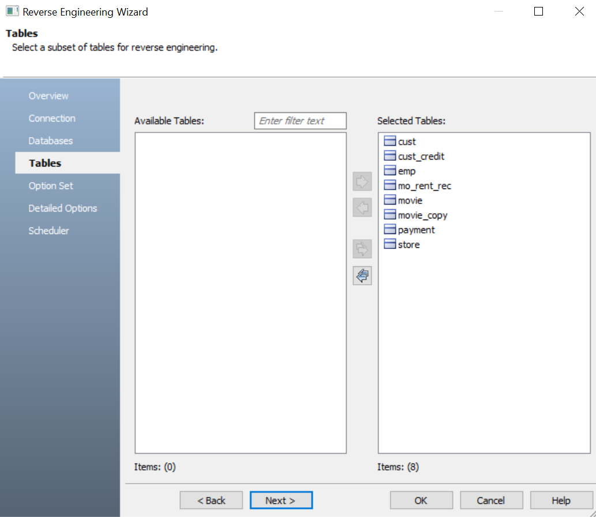
Click Next and on the Option Set tab, keep the default configuration.
Click Next and on the Detailed Options tab, keep the default configuration.
Click OK.
The reverse engineering process starts. Once the process is complete, the Right Model is set to the one that you reverse engineered.
Click Next and on the Type Selection tab, select the appropriate options.
For example, the following image shows the default options.
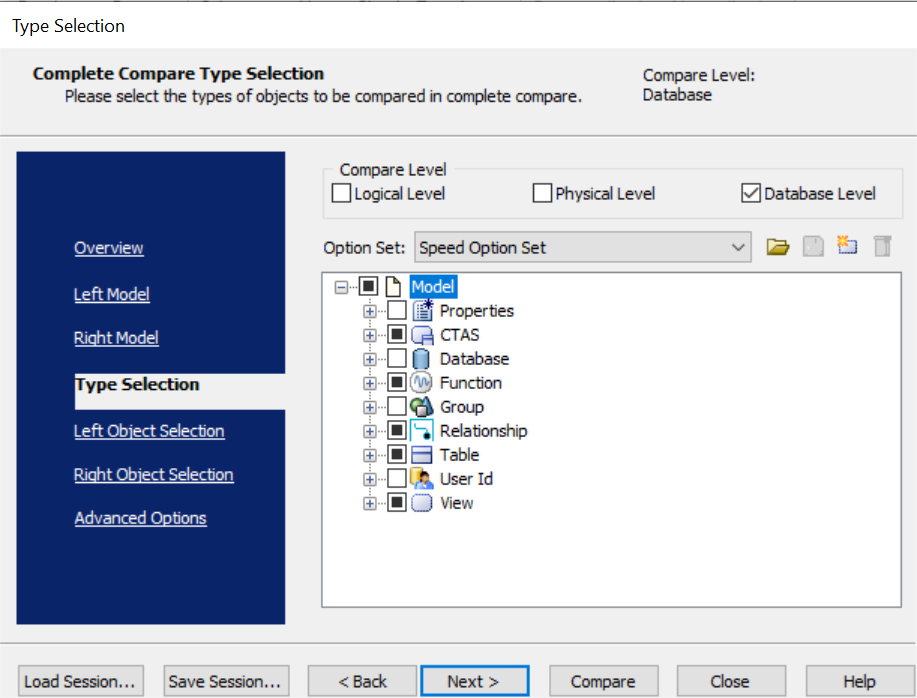
Click Next and on the Left Object Selection tab, select the appropriate options.
For example, the following image shows the default options.
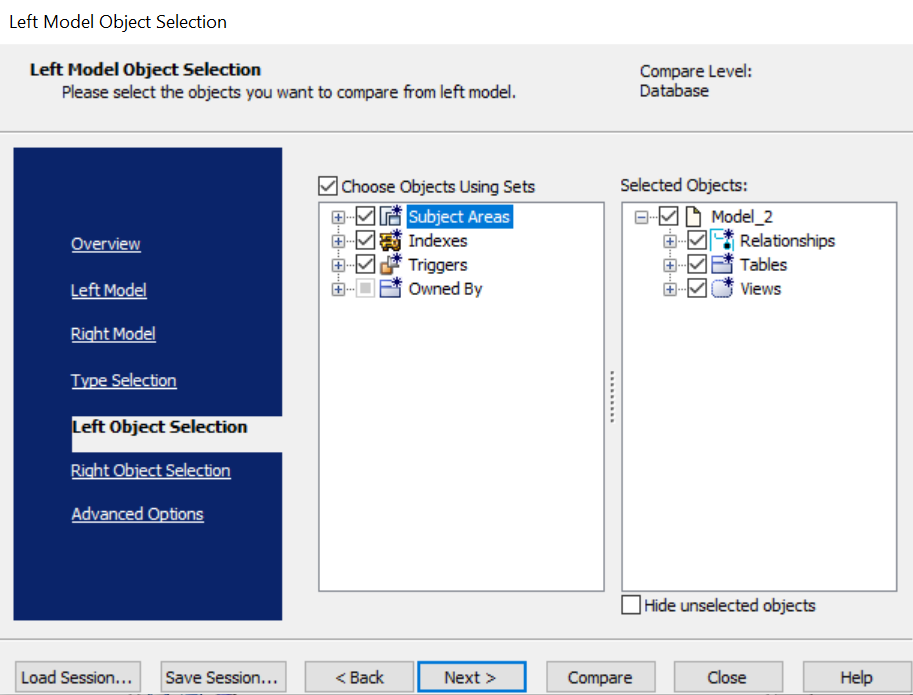
Click Next and on the Right Object Selection tab, select the appropriate options.
For example, the following image shows the default options.
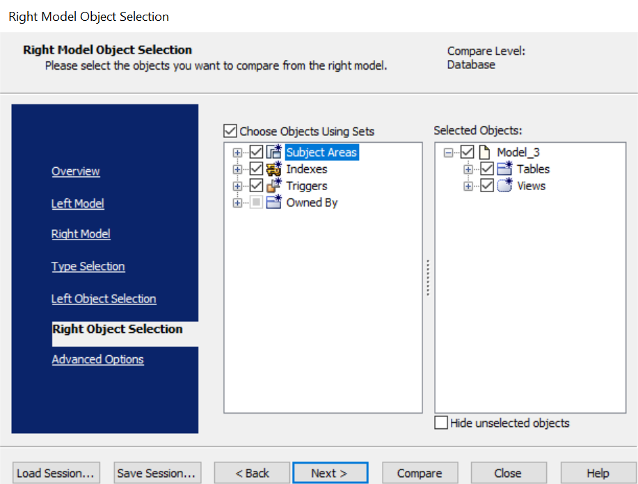
Click Compare.
The comparison process runs, and the Resolve Differences dialog box appears. It displays the differences between your model and database.
For example, the following image shows that the purchasinghistory table is available in your model but not in the database.
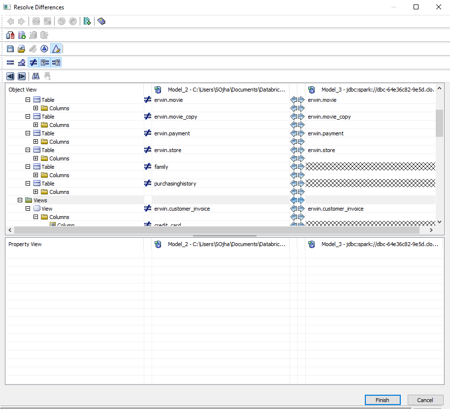
Select the purchasinghistory table and click . This will move the purchasinghistory table to the right model (from the database). Similarly, resolve other differences.
As differences were moved to the right model, click .
This launches the Forward Engineering Alter Script Generation Wizard.
Click Option Selection and clear all the Drop check boxes.
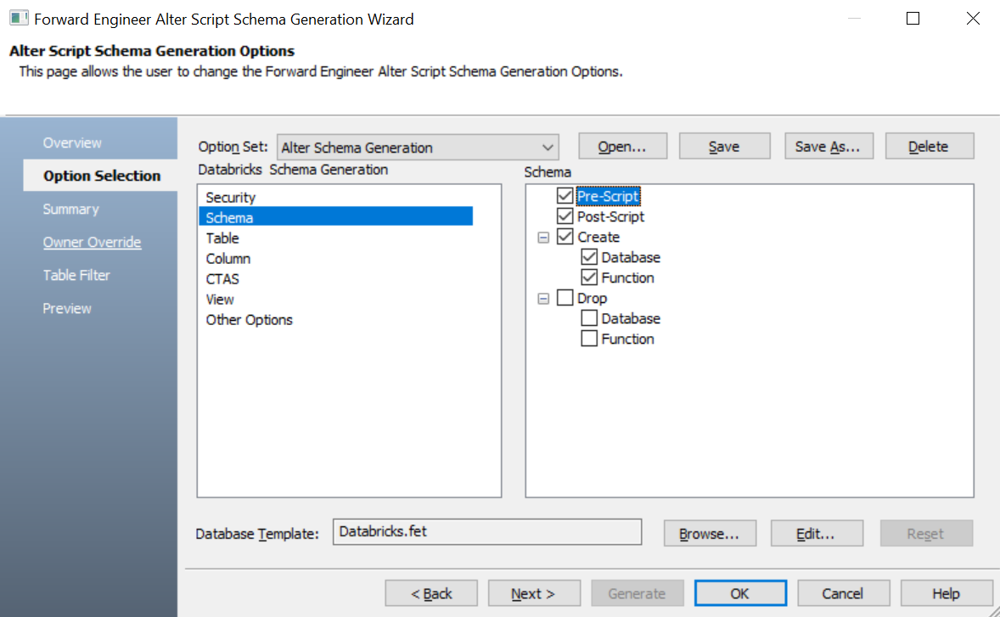
Click Table Filter and select or verify the tables to be included on the forward engineering script.
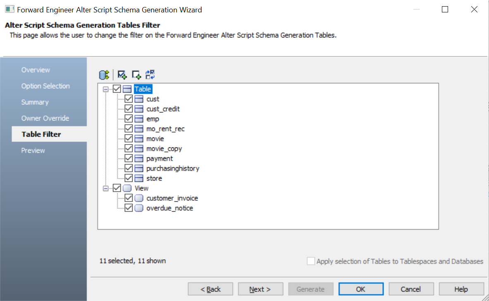
Click Preview to view and verify the alter script.
Click Generate and connect to your Databricks database.
The forward engineering process starts. The script generates your physical database schema. You can access your database and verify the newly generated schema.
Click OK. Then click Finish.
This closes the Resolve Differences dialog box and displays the Complete Compare wizard.
Click Close.